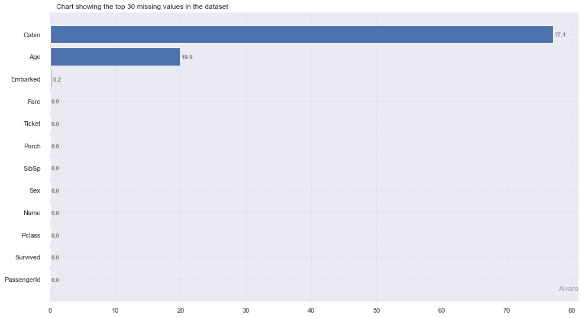

SLIK Preprocessing API¶
[1]:
import sys,os
sys.path.insert(0, '/Users/terra-016/Downloads/mlflow-titanic/slik_python_package/')
[2]:
from slik import loadfile as lf
Slik read file makes use of the same keyword arguments as pandas read functions
[3]:
train = lf.read_file('/Users/terra-016/Downloads/mlflow-titanic/slik_python_package/examples/titanic.csv')
CSV file read sucessfully
Data has 891 rows and 12 columns
[4]:
from slik import preprocessing as pp
[5]:
from slik import pipeline as ppl
[6]:
pp.check_nan(train,plot=True,verbose=False)
--------------- Count and Percentage of missing value ---------------

[7]:
pp.manage_columns(train,['PassengerId'],drop_duplicates='columns').head()
[7]:
| PassengerId | Survived | Pclass | Name | Sex | Age | SibSp | Parch | Ticket | Fare | Cabin | Embarked | |
|---|---|---|---|---|---|---|---|---|---|---|---|---|
| 0 | 1 | 0 | 3 | Braund, Mr. Owen Harris | male | 22.0 | 1 | 0 | A/5 21171 | 7.2500 | NaN | S |
| 1 | 2 | 1 | 1 | Cumings, Mrs. John Bradley (Florence Briggs Th... | female | 38.0 | 1 | 0 | PC 17599 | 71.2833 | C85 | C |
| 2 | 3 | 1 | 3 | Heikkinen, Miss. Laina | female | 26.0 | 0 | 0 | STON/O2. 3101282 | 7.9250 | NaN | S |
| 3 | 4 | 1 | 1 | Futrelle, Mrs. Jacques Heath (Lily May Peel) | female | 35.0 | 1 | 0 | 113803 | 53.1000 | C123 | S |
| 4 | 5 | 0 | 3 | Allen, Mr. William Henry | male | 35.0 | 0 | 0 | 373450 | 8.0500 | NaN | S |
[8]:
pp.map_column(train,column_name='Sex',items={'male':1,'female':0},add_prefix=True).head()
--------------- Mapping passed column ---------------
male was mapped to 1
female was mapped to 0
[8]:
| PassengerId | Survived | Pclass | Name | Sex | Age | SibSp | Parch | Ticket | Fare | Cabin | Embarked | transformed_Sex | |
|---|---|---|---|---|---|---|---|---|---|---|---|---|---|
| 0 | 1 | 0 | 3 | Braund, Mr. Owen Harris | male | 22.0 | 1 | 0 | A/5 21171 | 7.2500 | NaN | S | 1 |
| 1 | 2 | 1 | 1 | Cumings, Mrs. John Bradley (Florence Briggs Th... | female | 38.0 | 1 | 0 | PC 17599 | 71.2833 | C85 | C | 0 |
| 2 | 3 | 1 | 3 | Heikkinen, Miss. Laina | female | 26.0 | 0 | 0 | STON/O2. 3101282 | 7.9250 | NaN | S | 0 |
| 3 | 4 | 1 | 1 | Futrelle, Mrs. Jacques Heath (Lily May Peel) | female | 35.0 | 1 | 0 | 113803 | 53.1000 | C123 | S | 0 |
| 4 | 5 | 0 | 3 | Allen, Mr. William Henry | male | 35.0 | 0 | 0 | 373450 | 8.0500 | NaN | S | 1 |
[9]:
df = pp.detect_fix_outliers(train,target_column='event_type',n=2)
--------------- Table idenifying more than 2 Outliers present in each record ---------------
| PassengerId | Survived | Pclass | Name | Sex | Age | SibSp | Parch | Ticket | Fare | Cabin | Embarked | |
|---|---|---|---|---|---|---|---|---|---|---|---|---|
| 745 | 746 | 0 | 1 | Crosby, Capt. Edward Gifford | male | 70.0 | 1 | 1 | WE/P 5735 | 71.00 | B22 | S |
| 27 | 28 | 0 | 1 | Fortune, Mr. Charles Alexander | male | 19.0 | 3 | 2 | 19950 | 263.00 | C23 C25 C27 | S |
| 88 | 89 | 1 | 1 | Fortune, Miss. Mabel Helen | female | 23.0 | 3 | 2 | 19950 | 263.00 | C23 C25 C27 | S |
| 159 | 160 | 0 | 3 | Sage, Master. Thomas Henry | male | NaN | 8 | 2 | CA. 2343 | 69.55 | NaN | S |
| 180 | 181 | 0 | 3 | Sage, Miss. Constance Gladys | female | NaN | 8 | 2 | CA. 2343 | 69.55 | NaN | S |
| 201 | 202 | 0 | 3 | Sage, Mr. Frederick | male | NaN | 8 | 2 | CA. 2343 | 69.55 | NaN | S |
| 324 | 325 | 0 | 3 | Sage, Mr. George John Jr | male | NaN | 8 | 2 | CA. 2343 | 69.55 | NaN | S |
| 341 | 342 | 1 | 1 | Fortune, Miss. Alice Elizabeth | female | 24.0 | 3 | 2 | 19950 | 263.00 | C23 C25 C27 | S |
| 792 | 793 | 0 | 3 | Sage, Miss. Stella Anna | female | NaN | 8 | 2 | CA. 2343 | 69.55 | NaN | S |
| 846 | 847 | 0 | 3 | Sage, Mr. Douglas Bullen | male | NaN | 8 | 2 | CA. 2343 | 69.55 | NaN | S |
| 863 | 864 | 0 | 3 | Sage, Miss. Dorothy Edith "Dolly" | female | NaN | 8 | 2 | CA. 2343 | 69.55 | NaN | S |
[10]:
pp.handle_nan(dataframe=train,target_name='Survived',strategy='mean',fillna='mode',
drop_outliers=True,thresh_x=50,thresh_y=50,n=3,verbose=False).head()
--------------- Count and Percentage of missing value ---------------
Dropping rows with 50% missing value: Number of records dropped is 0
Dropping Columns with 50% missing value: ['Cabin']
New data shape is (891, 11)
[10]:
| PassengerId | Survived | Pclass | Name | Sex | Age | SibSp | Parch | Ticket | Fare | Embarked | |
|---|---|---|---|---|---|---|---|---|---|---|---|
| 0 | 1 | 0 | 3 | Braund, Mr. Owen Harris | male | 22.0 | 1.0 | 0.0 | A/5 21171 | 7.250000 | S |
| 1 | 2 | 1 | 1 | Cumings, Mrs. John Bradley (Florence Briggs Th... | female | 38.0 | 1.0 | 0.0 | PC 17599 | 32.204208 | C |
| 2 | 3 | 1 | 3 | Heikkinen, Miss. Laina | female | 26.0 | 0.0 | 0.0 | STON/O2. 3101282 | 7.925000 | S |
| 3 | 4 | 1 | 1 | Futrelle, Mrs. Jacques Heath (Lily May Peel) | female | 35.0 | 1.0 | 0.0 | 113803 | 53.100000 | S |
| 4 | 5 | 0 | 3 | Allen, Mr. William Henry | male | 35.0 | 0.0 | 0.0 | 373450 | 8.050000 | S |
[11]:
pp.bin_age(train,'Age').head()
[11]:
| PassengerId | Survived | Pclass | Name | Sex | Age | SibSp | Parch | Ticket | Fare | Cabin | Embarked | transformed_Age | |
|---|---|---|---|---|---|---|---|---|---|---|---|---|---|
| 0 | 1 | 0 | 3 | Braund, Mr. Owen Harris | male | 22.0 | 1 | 0 | A/5 21171 | 7.2500 | NaN | S | Young Adult |
| 1 | 2 | 1 | 1 | Cumings, Mrs. John Bradley (Florence Briggs Th... | female | 38.0 | 1 | 0 | PC 17599 | 71.2833 | C85 | C | Mid-Age |
| 2 | 3 | 1 | 3 | Heikkinen, Miss. Laina | female | 26.0 | 0 | 0 | STON/O2. 3101282 | 7.9250 | NaN | S | Young Adult |
| 3 | 4 | 1 | 1 | Futrelle, Mrs. Jacques Heath (Lily May Peel) | female | 35.0 | 1 | 0 | 113803 | 53.1000 | C123 | S | Mid-Age |
| 4 | 5 | 0 | 3 | Allen, Mr. William Henry | male | 35.0 | 0 | 0 | 373450 | 8.0500 | NaN | S | Mid-Age |
[12]:
pp.identify_columns(train,'Survived',id_column='PassengerId',project_path='Titanic')
--------------- Identifying columns present in the data ---------------
Target column is Survived. Attribute in target column incldes:
[0, 1]
Features with high cardinality:['Name', 'Ticket', 'Cabin']
{'cat_feat': ['Name', 'Sex', 'Ticket', 'Cabin', 'Embarked'],
'high_card_feat': ['Name', 'Ticket', 'Cabin'],
'id_column': 'PassengerId',
'input_columns': ['Pclass',
'Name',
'Sex',
'Age',
'SibSp',
'Parch',
'Ticket',
'Fare',
'Cabin',
'Embarked'],
'lower_cat': ['Sex', 'Embarked'],
'num_feat': ['Pclass', 'Age', 'SibSp', 'Parch', 'Fare'],
'target_column': 'Survived'}
--------------- Saving Attributes in Yaml file ---------------
Data columns successfully identified and attributes are stored in Titanic/metadata
[13]:
# import ,yaml
pp.create_schema_file(train,target_column='Survived',project_path='Titanic',id_column='PassengerId')
--------------- Creating Schema file ---------------
{'dtype': {'PassengerId': 'int64',
'Survived': 'int64',
'Pclass': 'int64',
'Name': 'object',
'Sex': 'object',
'Age': 'float64',
'SibSp': 'int64',
'Parch': 'int64',
'Ticket': 'object',
'Fare': 'float64',
'Cabin': 'object',
'Embarked': 'object'},
'parse_dates': [],
'index_col': 'PassengerId',
'target_col': 'Survived'}
Schema file stored in Titanic/metadata
[14]:
pp.drop_uninformative_fields(train).head()
--------------- Dropping uninformative fields ---------------
uninformative fields dropped: []
[14]:
| PassengerId | Survived | Pclass | Name | Sex | Age | SibSp | Parch | Ticket | Fare | Cabin | Embarked | |
|---|---|---|---|---|---|---|---|---|---|---|---|---|
| 0 | 1 | 0 | 3 | Braund, Mr. Owen Harris | male | 22.0 | 1 | 0 | A/5 21171 | 7.2500 | NaN | S |
| 1 | 2 | 1 | 1 | Cumings, Mrs. John Bradley (Florence Briggs Th... | female | 38.0 | 1 | 0 | PC 17599 | 71.2833 | C85 | C |
| 2 | 3 | 1 | 3 | Heikkinen, Miss. Laina | female | 26.0 | 0 | 0 | STON/O2. 3101282 | 7.9250 | NaN | S |
| 3 | 4 | 1 | 1 | Futrelle, Mrs. Jacques Heath (Lily May Peel) | female | 35.0 | 1 | 0 | 113803 | 53.1000 | C123 | S |
| 4 | 5 | 0 | 3 | Allen, Mr. William Henry | male | 35.0 | 0 | 0 | 373450 | 8.0500 | NaN | S |
[15]:
pp.preprocess(data=train,target_column='Survived',train=True,verbose=False,project_path='./Titanic'\
,logging='display')
The task for preprocessing is classification
--------------- Count and Percentage of missing value ---------------
Dropping rows with 75% missing value: Number of records dropped is 0
Dropping Columns with 75% missing value: ['Cabin']
New data shape is (891, 11)
--------------- Mapping target columns ---------------
0 was mapped to 0
1 was mapped to 1
--------------- Bucketize Age columns ---------------
Inferred age column: [Age]
--------------- Mapping passed column ---------------
male was mapped to 0
female was mapped to 1
--------------- Dropping uninformative fields ---------------
uninformative fields dropped: []
--------------- Creating Schema file ---------------
Schema file stored in Titanic/data/metadata
--------------- Preprocessed data saved ---------------
Input data preprocessed successfully and stored in ./Titanic/data/train_data.pkl
[ ]: